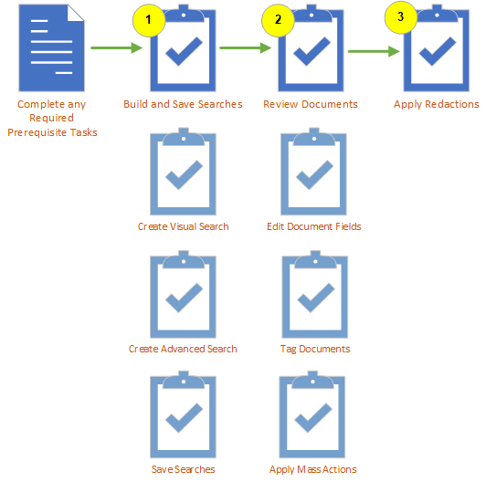

In the Review module, reviewers analyze the documents that belong to the case. Reviewing a case is an iterative process; the review tasks and the order that the review tasks are completed depends on the requirements of your business. The procedures described in this article explain only some of the many tasks you can complete in Review. You can review documents within a Review Pass or outside of a Review Pass. This is a possible workflow for reviewing documents outside of a review pass. For reviewing documents within a review pass, see

The following table shows the prerequisites that must be in place before you start:
|
Task |
Notes |
|---|---|
|
Assign Privileges |
Make sure all users have the proper privileges assigned to them before reviewing a case. Privileges determine what activities users are allowed to undertake in Review. |
|
Disable Pop-up Blocker |
If you use a pop-up blocker in your browser, make sure to disable it for |
|
Tags and Coding Forms |
To tag documents and make use of coding forms, both are required to already have been defined in your case. You can create new tags and coding forms in the Case Settings area of the Review & Transcripts module. See |
The first step is to build and save your searches. You have two options for building searches.
Visual Search enables you to perform and review searches by using one of three 2-dimensional charts as well as a Concept Wheel. This type of searching lets you view results in a manner that correlates between two or more data fields, or in relation to a data set as a whole.
With Visual Search, you can combine text-based and metadata-based criteria into a single search, with the options to specify a valid date range and to include document family members. The criteria will be evaluated according to one of three search types: Contains All, Contains One or More, and Exclude these. Each search type can contain multiple conditions that subsequently contain multiple values.
See
Advanced Search allows you to easily construct complex search expressions or specialized searches and display results in the Results tab. Searches can also be saved for later use or for specific tasks.
On the Advanced Search tab, under Search Criteria, areas can be expanded as required to define the search and/or search options.
See
After your searches have been built the next step is to save your search. To learn more about managing saved searches, see
Reviewing documents in a case is a multi-step and iterative process. The review tasks and the order that the review tasks are completed depends on the requirements of your business. When reviewing documents, reviewers may:
The activities explained in this section require a variety of permissions that are defined by the
You have the option to edit field values for a selected document in the Document Viewer window. See
One of the primary activities when preparing documents for discovery is applying tags. A tag is a type of “marker” that allows you to categorize and identify specific document characteristics.
Typically defined by an administrator, tags allow
you and your organization to find and identify similar documents—for example,
those that are privileged in some way, or those requiring review by a topic
expert.
Mass Actions are actions performed on multiple documents at one time, such as populating coding fields, OCRing documents, printing to PDF, and/or applying tags. See
Once the initial review is completed, you are ready to redact your documents in preparation for production.
Redactions obscure the content of image files so that only appropriate
information is visible in the files you prepare for discovery. In
Related Topics